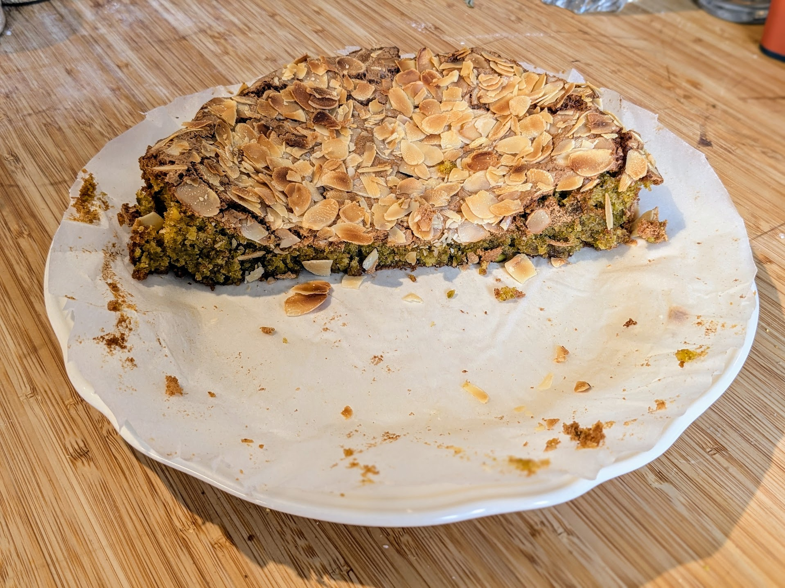

Gâteau à la pistache

Pour un gâteau (8 parts environ) :
- 170g de pistaches crues, non grillées, non salées, décortiquées (au rayon pâtisserie ; les éclats de pistache, ça va aussi)
- 80g de poudre d'amande fine (si on en a pas de fine, on peut la passer quelques secondes dans un mixeur à épices)
- 200g de sucre (blanc, fin, pas de sucre glace)
- 40g d'amandes effilées
- Trois œufs
- Un jaune d'œuf
- Deux cuillères à café d'extrait de vanille
- Un citron (on n'utilise que le zeste)
- Un peu de sucre glace
- Un peu de beurre
- Deux pincées de fleur de sel
- Sortir les œufs du frigo. Beurrer un moule (rond de 24cm ou carré de 20cm), et le recouvrir de papier sulfurisé. Il faut bien que ça dépasse de tous les côtés. C'est pas grave si il y a un peu des plis sur les côtés.
- Faire préchauffer le four à 170°C. Zester le citron.
- Mixer les pistaches par à-coups pour obtenir une semoule pas trop fine. Les mélanger avec la poudre d'amande et la fleur de sel.
- Battre les œufs (y compris le jaune d'œuf), le sucre et l'extrait de vanille ensemble avec un batteur électrique ou en utilisant le fouet d'un robot. Continuer à battre jusqu'à ce que le mélange gonfle, quadruple de volume, et blanchisse. Ça peut prendre bien 5 minutes.
- Ajouter immédiatement les poudres mélangées et le zeste de citron, mélanger avec une maryse en plongeant au fond du bol et en tournant le bol progressivement. Le but est que ça soit bien incorporé et homogène, et que le mélange œufs/sucre retombe le moins possible (même si c'est inévitable que ça retombe un peu).
- Verser la pâte dans le moule, recouvrir des amandes effilées, et enfourner pour 35 minutes (jusqu'à ce qu'un cure-dent enfoncé au centre ressorte sec).
- Laisser complètement refroidir le gâteau dans le moule sur une grille. Puis, utiliser le papier cuisson pour le soulever et le poser sur une grande assiette ou une planche à découper. Délicatement rabattre le papier sulfurisé sur les côtés et le couper pour ne pas que ça dépasse trop (mais ne pas tenter de l'enlever du dessous). Saupoudrer de sucre glace et servir.
Remarque : c'est un gâteau à la fois extrêmement délicieux et très fragile, il faut s'attendre à ce qu'il se craquèle un peu (c'est normal et ça montre à tout le monde qu'il est fait maison). Il est aussi très sucré, donc c'est une chouette idée de le servir avec quelque chose qui apporte un peu de gras (comme une crème chantilly) et/ou des fruits un peu acidulés (du genre abricots ou groseilles).